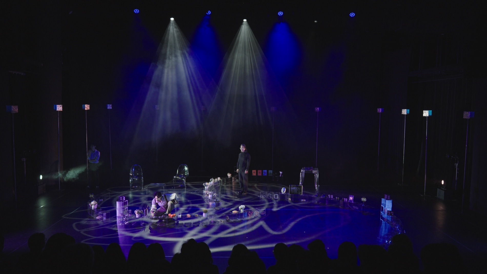
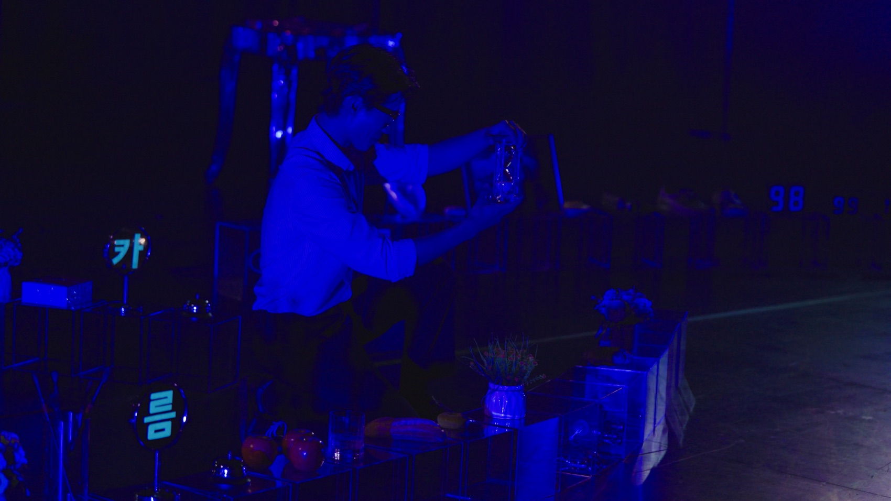
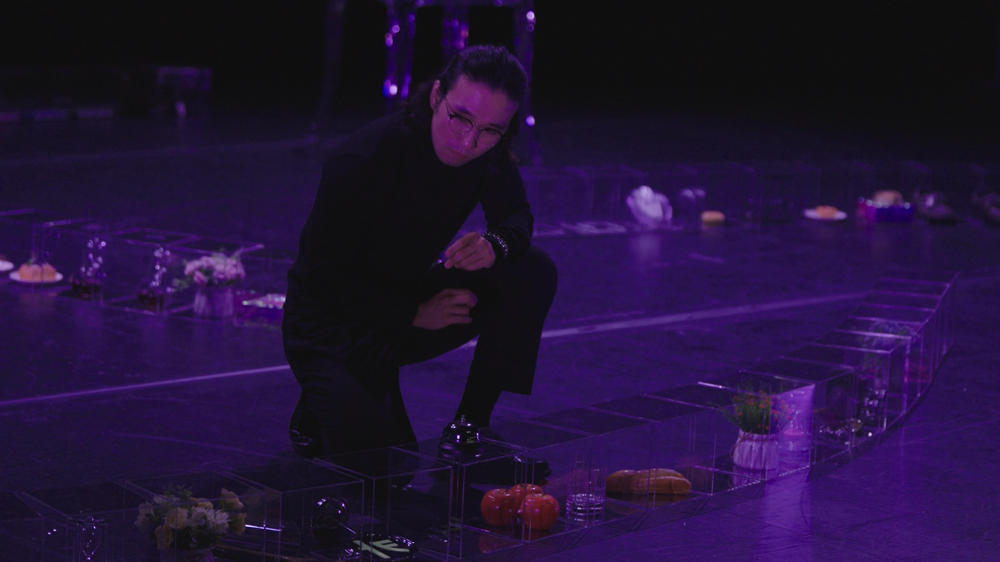
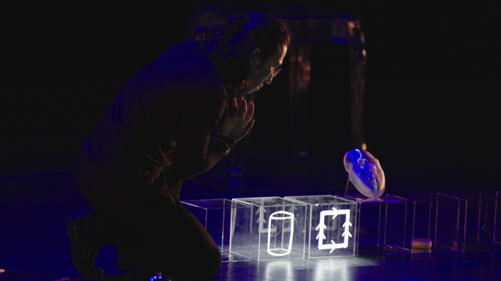
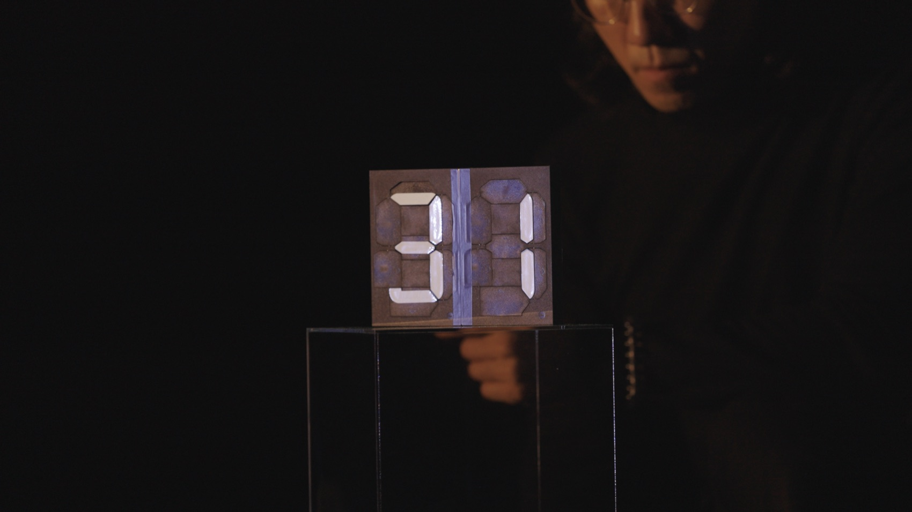

Performance — 2026
113시공간을 넘어 113을 찾아 · 리멘워커
소수 113과 연결합(Connected Sum)으로 빚어낸 시공간의 무한궤도 — 시인의 마지막 시를 찾아, 삶과 죽음의 경계를 잇는 연극.
An endless orbit of space-time built from the prime 113 and the connected sum — a play that joins life and death in search of a poet’s last poem.
수학자 서혁은 시인인 친구 순원과 백두대간 등산을 떠납니다. 마지막 날, 순원은 자신의 113번째 시가 적힌 수첩을 산에 두고 온 것을 알고 홀로 되돌아갔다가, 눈보라 속 링반데룽(環狀彷徨) — 직선으로 걷는다 믿지만 거대한 원을 그리며 제자리를 맴도는 환상방황 — 에 빠져 돌아오지 못합니다. 미술을 전공한 또 다른 친구 정태는 프랑스의 카페에서 만난 안나에게 ‘끝이 없는 빵’의 이야기를 듣고, 한국으로 돌아와 수학적 개념이 담긴 무지개 도너츠를 굽습니다. 순원의 기일, 서혁과 정태는 시공간을 초월한 ‘구름카페’에서 도너츠의 힘을 빌려 아직도 링반데룽을 걷는 순원과 마주하고 — 서혁은 마침내 시 ‘113’을 발견해 모두 외웁니다.
극의 구조 자체가 수학입니다. 수론에서 113은 더 이상 쪼개질 수 없는 ‘수의 원자’(소수)이고, 위상수학의 연결합(#)은 서로 떨어진 두 다양체에 구멍을 내어 이어 붙이는 연산입니다. 1막(현재·상실)과 2막(과거·기억)의 두 순환 고리는 더블 토러스처럼 3막(초월·재회)의 한 지점에서 연결되고, 순원을 죽음으로 몰아넣은 원형의 궤도는 역설적으로 시작도 끝도 없는 토러스의 순환이 됩니다. 무지개 도너츠는 프랑스와 한국, 삶과 죽음이라는 두 다양체를 잇는 연결합 그 자체입니다.
The mathematician Seohyuk treks the Baekdu-daegan with his friend, the poet Sunwon. On the last day Sunwon goes back alone for the notebook holding his 113th poem — and is lost to the snowstorm’s Ringwanderung, the circular wandering in which one walks a vast circle while believing it a straight line. Their friend Jeongtae, a painter, hears of ‘the bread without end’ from Anna in a French café, and back in Korea bakes rainbow doughnuts that carry the mathematics. On the anniversary of Sunwon’s death, in the transcendent ‘Cloud Café,’ the doughnut carries Seohyuk to the friend still circling the snow — where he finds poem ‘113’ at last, and learns it by heart. The play’s structure is itself mathematics: 113 is a prime — an atom of number — and the topological connected sum (#) joins two separate manifolds by cutting and gluing. The loops of Acts I and II meet, like a double torus, at one point in Act III; the circle that killed Sunwon becomes, paradoxically, the torus’s beginningless, endless cycle; and the rainbow doughnut is the connected sum itself — joining France and Korea, the living and the dead.
- 극작
- Written by
- 최재경 (수학자 · 고등과학원 교수)
- Choe Jaigyoung (mathematician, KIAS)
- 연출
- Directed by
- 김제민 Kim Jae Min
- 드라마투르그
- Dramaturg
- 함성호
- 출연
- Cast
- 최재경 · 박병호(연남) · 신현우(서혁) · 이창재(순원) · 최찬(정태) · 최현영(안나) · 김재현(사진 청년)
- Choe Jaigyoung · Park Byung-ho · Shin Hyun-woo · Lee Chang-jae · Choi Chan · Choi Hyun-young · Kim Jae-hyun
- 스태프
- Staff
- 조명 성미림 · 음향 원형빈 · 음악 민경현 · 가면 손희범 · 조연출 한승훈 · PM 장은준 · PD 김용휘
- Lighting Sung Mi-rim · sound Won Hyung-bin · music Min Kyung-hyun · masks Son Hee-beom
- 기술
- Technology
- LED 스크린 2대 · 레이저 · 더미헤드 마이크
- 2 LED screens · laser · dummy-head microphone
- 주최·후원
- Production
- 리멘워커 · 고등과학원 · 서울문화재단
- Limenwalker · KIAS · Seoul Foundation for Arts and Culture
- 키워드
- Keywords
- prime 113 · connected sum · Ringwanderung · torus
창작 — 수학자가 쓴 희곡
The making — a play written by a mathematician
기하학이 서사가 될 때
When geometry becomes narrative
‘113’은 고등과학원 초학제 연구단 ‘느린 과학, 낮은 기술, 거꾸로 선 예술’의 여정에서 태어난 작품으로, 미분기하학자 최재경(고등과학원 교수)이 직접 희곡을 쓰고 무대에도 오릅니다. 창작 과정에서 연결합의 수학적 다이어그램과 매듭 이론 자료가 대본과 나란히 검토되었고, 시 ‘113’의 형태 자체가 작품의 오브제로 디자인되었습니다. 공중매(2024), 체셔 고양이(2025)로 이어져 온 연구단의 실험이 처음으로 정식 극장 연극의 형식에 도달한 작업입니다.
‘113’ was born of the KIAS research unit’s journey: the differential geometer Choe Jaigyoung wrote the play himself and takes the stage in it. Mathematical diagrams of the connected sum and knot theory sat beside the script in development, and the poem ‘113’ was designed as a physical object of the work. It is the point where the unit’s experiments — Gongjungmae (2024), the Cheshire Cat (2025) — first arrive at the form of full theatre.
- 공연 정보
- Times
- 평일 19:30 · 주말 15:00 (월 쉼) · 15세 이상
- Weekdays 7:30pm · weekends 3pm (dark Mondays) · ages 15+
공연 기록 — 대학로 극장 쿼드, 2026. 7.
Performance record — SFAC Theater QUAD, July 2026



